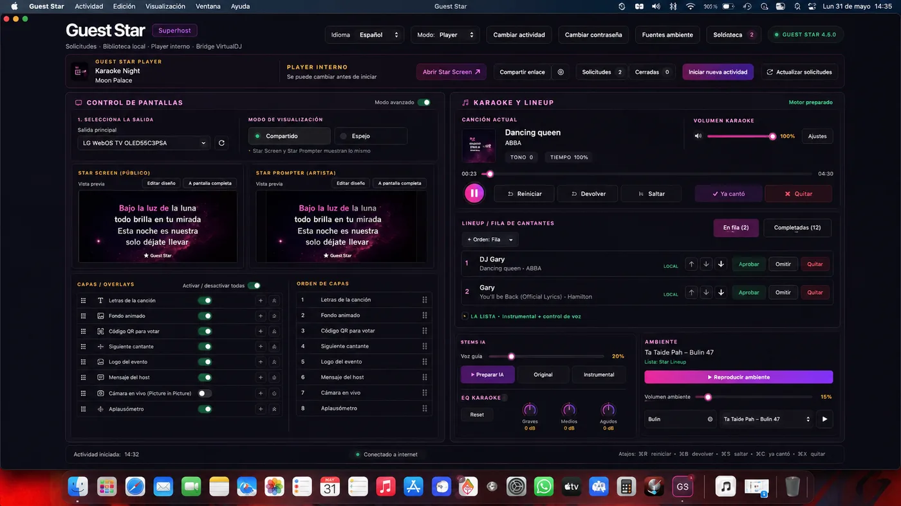

Tu marca, en el centro del encuentro.
Entretenimiento para encuentros empresariales, celebraciones, activaciones y eventos corporativos. Diseñamos una experiencia que acompañe tu objetivo y conecte con las personas.
Diseñar mi eventoEntretenimiento · talento · tecnología
Entretenimiento para hoteles, marcas y eventos corporativos. Talento, producción y tecnología propia para crear experiencias que se recuerdan.
Experiencia que conecta
Experiencia comercial de ARTI y su equipo.


01 / Lo que hacemos hoy
Diseñamos cada propuesta alrededor de tu público, tu espacio y lo que quieres lograr.
Entretenimiento para encuentros empresariales, celebraciones, activaciones y eventos corporativos. Diseñamos una experiencia que acompañe tu objetivo y conecte con las personas.
Diseñar mi eventoProgramación musical, DJ, animación, karaoke y experiencias participativas adaptadas al público y a la personalidad de cada establecimiento.
Conversar sobre mi hotelFormatos donde los asistentes cantan, juegan y participan. Guest Star Experience une esa energía con nuestra propia plataforma tecnológica.
Conocer Guest StarCoordinamos los elementos audiovisuales que acompañan el entretenimiento y el desarrollo del show. Definimos contigo el alcance de cada evento.
Hablar de la producciónTalento, música y entretenimiento para bodas y celebraciones personales, con una propuesta que refleje la identidad de cada ocasión.
Preparar mi celebración02 / Nuestra razón de ser
Arti Creative Group es la empresa matriz que reúne entretenimiento, talento artístico y desarrollo tecnológico. Hoy creamos y operamos experiencias; también construimos herramientas para hacerlas más participativas y mejor organizadas.
Nuestra visión es abrir nuevas oportunidades para el talento y facilitar el encuentro entre personas, profesionales y empresas.
03 / GUEST STAR EXPERIENCE
Nuestro primer proyecto: una experiencia interactiva impulsada por una plataforma de software desarrollada por ARTI.
Visitar gstarxp.com

El público canta, juega y participa. El equipo coordina el show y cada pantalla acompaña el momento.
Canciones, turnos y dinámicas musicales para que participar sea parte de la diversión.
Acceso desde el teléfono mediante QR y un kiosko como punto de entrada a la experiencia.
Pantalla principal, juegos y dinámicas de votación y puntuación según el formato de la actividad.
04 / Tecnología con propósito
Desarrollamos software y productos digitales para resolver necesidades operativas y mejorar experiencias. Guest Star Experience es el primer ejemplo concreto de esa capacidad.
Conversemos sobre software05 / Explora la visión
Prueba la demo interactiva de la red de talento y contratación. Los perfiles, cifras y operaciones son ficticios y se guardan solo en este navegador.
Demo disponible en español.
Cargando demostración…
06 / Próximo capítulo
Lo que hacemos hoy es el punto de partida de lo que queremos conectar mañana. Estas iniciativas todavía están en desarrollo.
Perfiles, portafolios, colaboración y oportunidades. Una comunidad para acercar artistas, profesionales del entretenimiento, empresas y personas que quieren descubrir talento.
Descubrir talento, consultar disponibilidad, solicitar servicios y coordinar contrataciones. El prototipo de ARTI explora esta visión con datos y operaciones de demostración.
Una iniciativa futura que explora soluciones digitales relacionadas con cuentas por cobrar y financiación. Su alcance operativo todavía está por definirse.
07 / Cómo trabajamos
Personas, contexto y propósito.
Una propuesta con identidad propia.
Talento y producción en sintonía.
El momento de conectar.
El próximo momento empieza contigo
Cuéntanos qué tienes en mente.